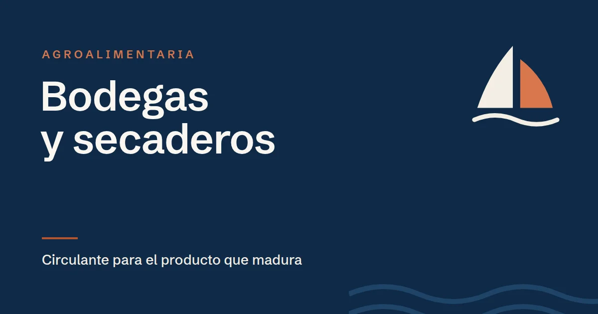

ICO Crecimiento para bodegas y secaderos: financiar el tiempo que tarda en venderse el producto

En resumen
Bodegas y secaderos de jamón tienen el mismo problema: el producto pasa años madurando antes de poder venderse, y ese stock hay que pagarlo desde el primer día. ICO Crecimiento encaja bien:
- Circulante para financiar el stock en crianza o en curación: hasta 5 años, con 1 de carencia y hasta el 100 % de la necesidad.
- Inversión en barricas, depósitos, cámaras de secado, naves o embotelladoras: hasta 10 años, con 2 de carencia y hasta el 80 %.
- Al ser transformación y no producción agrícola primaria, se aplica el límite general de ayudas de minimis.
Basado en el Documento de Condiciones Generales (DCG) de la línea ICO Crecimiento. Las condiciones pueden cambiar y, en caso de duda, prevalece el texto oficial: compruébalo siempre en www.ico.es.
Un stock que tarda años en convertirse en dinero
Un vino de crianza pasa al menos dos años entre barrica y botella antes de salir al mercado; un reserva, más. Un jamón ibérico de bellota puede necesitar tres años o más de curación. Durante todo ese tiempo la empresa ya ha pagado la uva o los cerdos, la mano de obra, la energía y las instalaciones, y todavía no ha cobrado nada.
Cuanto más crece la empresa, más producto tiene madurando y más dinero inmovilizado. Por eso muchas bodegas y secaderos rentables van justos de tesorería, y dependen de pólizas que hay que renovar cada año.
Cómo encaja ICO Crecimiento
Circulante: financiar el stock
- Hasta 5 años, un plazo más acorde con un producto que tarda años en venderse que una póliza anual.
- 1 año de carencia: el primer año solo se pagan intereses.
- Hasta el 100 % de la necesidad de circulante justificada.
- También puede destinarse a cancelar deuda a corto plazo con proveedores o bancos.
Inversión: ampliar la capacidad
- Barricas, depósitos de acero inoxidable, prensas y líneas de embotellado.
- Secaderos, cámaras de frío y de curación, salas de despiece.
- Naves, placas solares de autoconsumo y equipos de control de temperatura y humedad.
- Hasta 10 años, con 2 de carencia y hasta el 80 %. Se pueden incluir inversiones hechas o iniciadas en los 12 meses anteriores a la solicitud.
Ejemplo orientativo
Un secadero de Guijuelo vende 4 millones de euros al año y quiere aumentar un 25 % la producción de ibérico. Como cada pieza tarda unos tres años en venderse, ese crecimiento le obliga a tener mucho más producto en curación antes de ingresar nada por él. Calcula que necesita 500.000 € más de circulante y 300.000 € para ampliar una cámara de secado.
Con ICO Crecimiento podría pedir las dos cosas en la misma solicitud: el circulante a 5 años con 1 de carencia, y la cámara como inversión a 10 años con 2 de carencia, financiando hasta el 80 % (240.000 €). El resto de la inversión lo aportaría la empresa.
Lo que conviene revisar antes
- La forma jurídica. La línea exige una sociedad mercantil pyme. Las cooperativas y SAT deben revisar si encajan.
- La actividad. Elaborar vino o curar jamón es transformación, con el límite general de minimis de 300.000 € de ayuda en tres años. Si la empresa también cultiva viñedo o cría ganado, esa parte primaria tiene un límite mucho menor. Lo explicamos en el artículo sobre ayudas de minimis.
- El valor del stock en las cuentas. Un balance con mucho stock en crianza puede parecer poco líquido. Conviene explicar en la solicitud cómo y cuándo se convierte en ventas.
- Los resultados. Una mala cosecha o una mala campaña pueden dejar pérdidas en un ejercicio. La línea no admite pérdidas en los dos últimos ejercicios cerrados ni patrimonio neto negativo.
Tienes más detalle sobre el sector en la guía de ICO Crecimiento para empresas agroalimentarias.
Preguntas frecuentes
¿Puede una bodega pedir ICO Crecimiento?
Sí, si es una sociedad mercantil pyme con al menos 4 años, sin pérdidas en los dos últimos ejercicios ni patrimonio neto negativo, y cumple el resto de requisitos. Puede financiar el stock en crianza como circulante y las barricas, depósitos o naves como inversión.
¿ICO Crecimiento financia el stock de jamones en curación?
Sí. El stock en curación forma parte del circulante de la empresa, que la línea financia hasta 5 años, con 1 de carencia y hasta el 100 % de la necesidad justificada.
¿Qué límite de ayudas tiene una bodega o un secadero?
Elaborar vino o curar jamón es transformación, así que se aplica el límite general de minimis de 300.000 € de ayuda en tres años. La producción agrícola primaria tiene un límite de 50.000 €.